The Beltline is a Rails to Trails project encircling Atlanta. Ryan Gravel's 1999 thesis at Georgia Tech, the project ultimately plans to bind 22 miles of trail around the city, connecting neighborhoods and communities like never before. The project's initial phases are nearly complete, spurring a flood of economic development in once-ignored neighborhoods.
Visit the BeltLineThe BeltLine's first completed phase was its Eastside Trail, beginning at Piedmont Park, Atlanta's "Common Ground" since 1909.
Piedmont Park 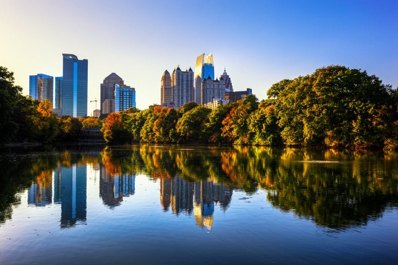After being shuddered for decades, the former Sears, Roebuck & Company building was fully renovated in 2014, offering an open marketplace, offices, and condomiums, complete with Skyline Park on the roof. Connected directly to the beltline, the Atlanta landmark is accessible by foot or bike to dozens of Atlanta neighborhoods.
Explore what's new at Ponce City Market 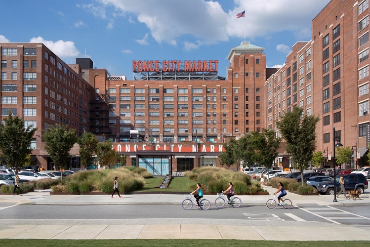A direct result of the BeltLine's development, Historic Fourth Ward Park was the first park element of the BeltLine fully realized. Resting on the north edge of Old Fourth Ward, the park serves as vital development in one of Atlanta's oldest neighborhoods.
Visit O4W Park 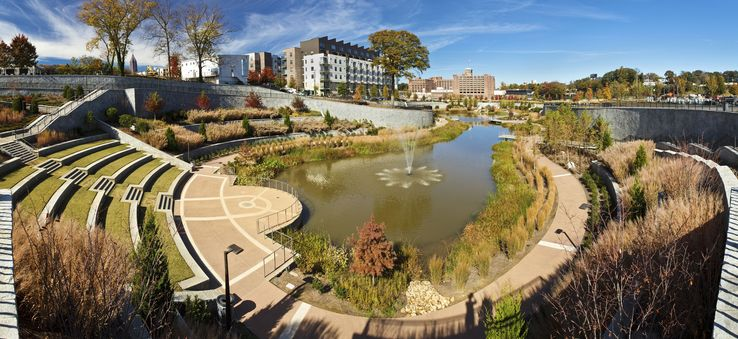The creation of O4W Park has helped make the neighborhood a popular destination, spurring development along its edge on the BeltLine, transforming unused warehouses into restaurants and breweries.
Read the latest on Common Ground's development 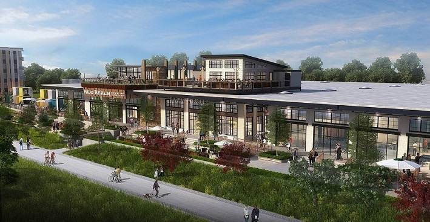Atlanta's first planned residential neighborhood, Inman Park's gorgeous Victorian homes make it one of Intown's most desirable neighborhoods, with one of the city's most highly anticipated summer festivals. With a MARTA Station and the beltLine constructed through it, the neighborhood is now connected to its city like never before.
Inman Park 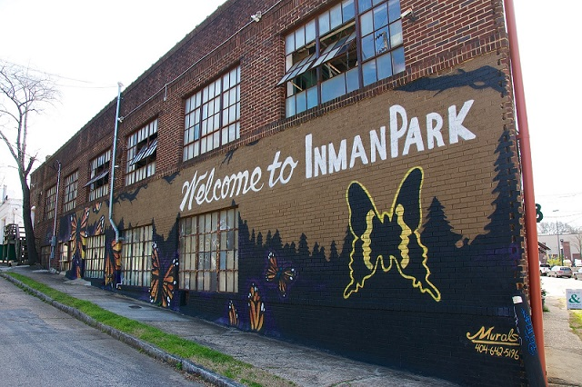After 100 years of operation, Atlanta Stove Works closed its doors in 1987. The factory remained vacant for the next three decades.By 2012, however, the BeltLine had generated enough momentum that Paces Properties purchased the empty factory and created Krog Street Market. A new destination for Atlanta's Intown culture, the open market offers local food, produce, goods, as well as several restaurants and a full bar. After just a few years since its opening, Krog Street Market has been recognized as one of the "World's Best Food Halls" by Travel + Leisure, and featured on the Travel Channel.
Check out Krog Street Market 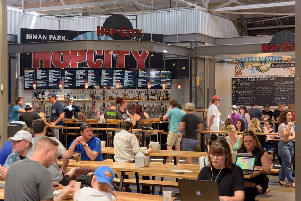Before the BeltLine, Inman Park and Old Fourth Ward were cut off from other historic neighborhoods like Cabagetown by DeKalb Avenue and rail lines. However, these neighborhoods are now connected with a short walk, making it easier than ever for Atlantans to experience the unique character of each neighborhood. Cabbagetown's Wylie Street murals and annual Chomp & Stomp Festival help make it one of Atlanta's most eclectic neighborhoods.
Find things to do in Cabbagetown 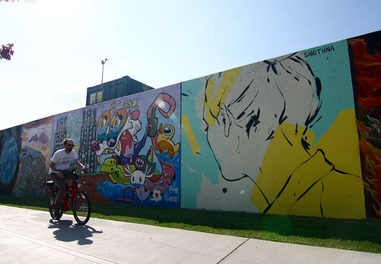In the past year, the BeltLine has seen the planning, construction, and completion of the 3-mile Westside trail, which finally stitches together some of Atlanta's most historic neighborhoods on its west side. From Washington Park, past Atlanta University Center, and through historic West End, the BeltLine has brought cohesion and purposeful development in coordination with the city's long gestating efforts to revitalize the West Side.
You can read more about ongoing efforts on Atlanta's West Side here. 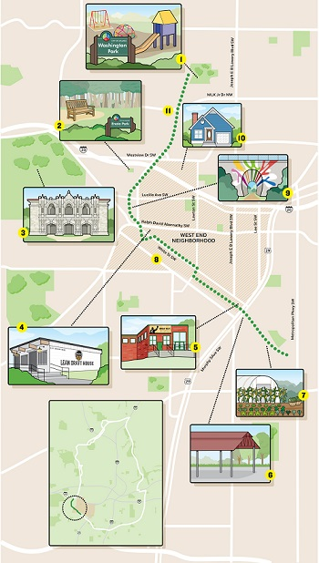At the north end of the Westside Trail is Washington Park, a 20-acre green space at the heart of an historic neighborhood of the same name. The park is the central gathering place for the community, which now hosts an annual Jamboree Fundraiser.
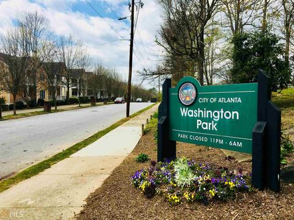From Washington Park, the trail winds south into West End, one of Atlanta's oldest historic neighborhoods. Listed on the National Register of Historic Places, the tree-lined neighborhood has been here since 1835, and is home to multiple parks, award-winning schools, and tremendous growth potential.
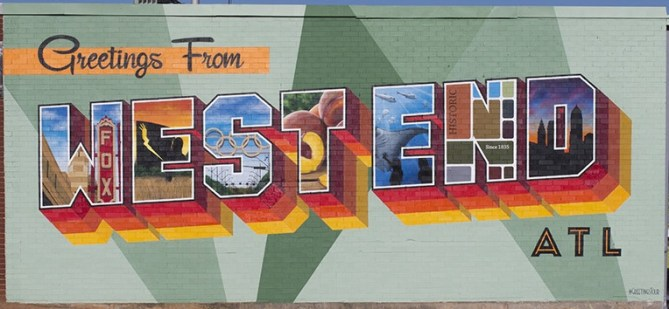Initial development along the BeltLine's Westside trail has been Lee + White, an adaptive re-use project converting a sprawling 426,000 square feet of unused warehouses into open space for local breweries and eateries, including Monday Night Brewing, Wild HEaven Beer, ASW Distillery, and Hop City.
Read more about Lee + White. 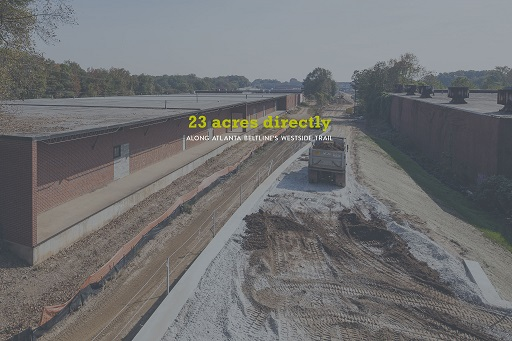One of the BeltLine's more recent announcements was the acquisition of the land south of the city. The City of Atlanta purchased the land in spring 2018, enabling the union of the city's far Wast and West sides.
Read details here.As with other neighborhoods, the BeltLine's expansion to the city's Southside has brought developers to the area. One of the more exciting projects is Pittsburgh Yards, a mixed-use project on an unused, 31-acre industrial lot. The project promises to “develop an economic catalyst in an area where living-wage jobs and economic opportunities are scarce.”
Read more about the project here. 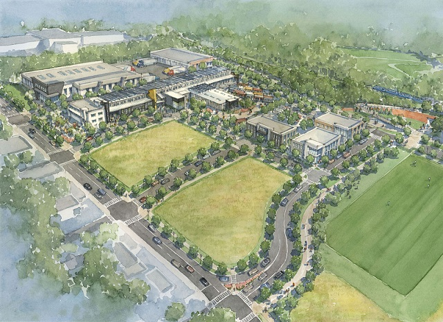As we've seen elsewhere, the BeltLine's simplest yet profound accomplishment has been to re-thread neighborhoods together that have been geographically isolated by highways and rail lines. The Southside Trail will redevelop unused rail lines to overcome the geographic barrier created by a different set of raillines at University Ave and McDonough Blvd.
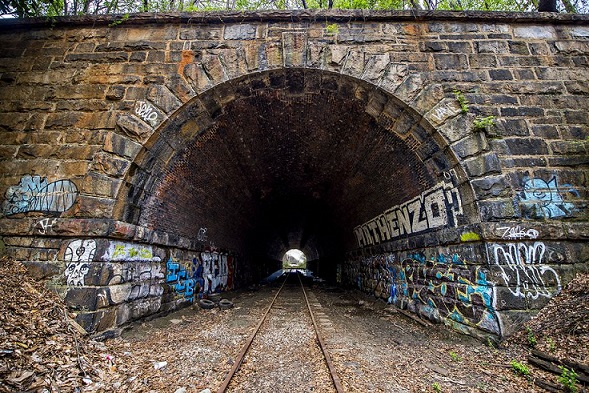As the BeltLine fuels growth along its planned route, developers are building condos, grocery stores, bars, restaurants (and parking lots) in long-neglected lots. Currently, the Southside Trail is being cleared as projects are built along its route. Proposals have been made about how the BeltLine should traverse arguably its largest physical barrier - I-20 at Bill Kennedy Parkway.When completed, the quarters of the city that were created by major highways through the city center will be reunited.
Read about the proposals. 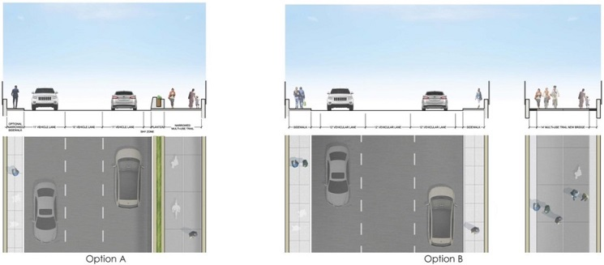There are many plans for the BeltLine's future, including completing networks in Midtown, north of Piedmont Park, where necessary land has been secured. Most crucially, the BeltLine is currently at a crossroads: sustained community action will be required to ensure the BeltLine's original vision of light rail along the project, and affordable housing units along its course so current residents are not forced from their homes.
Get Involved